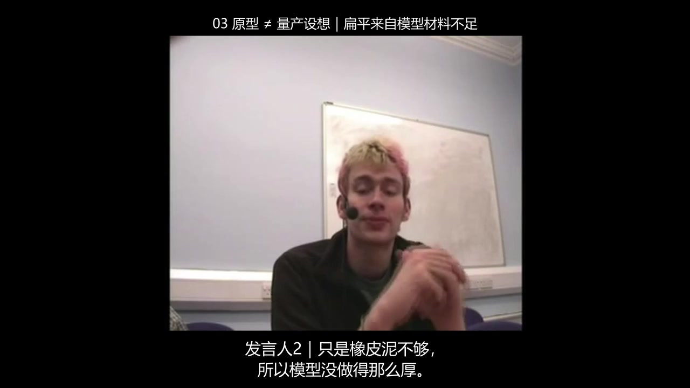
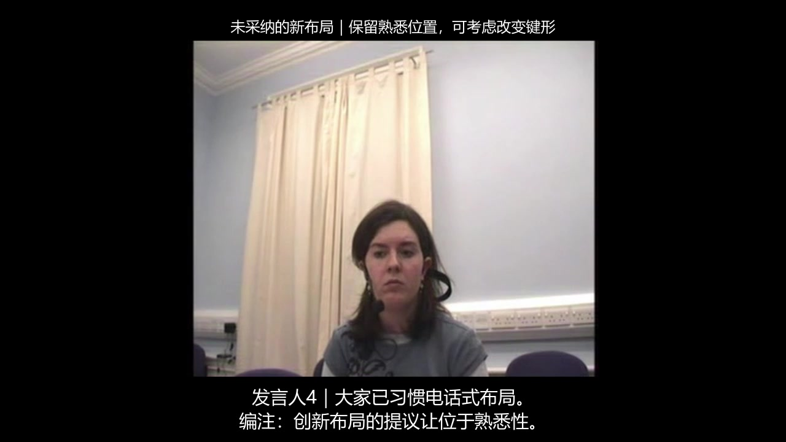
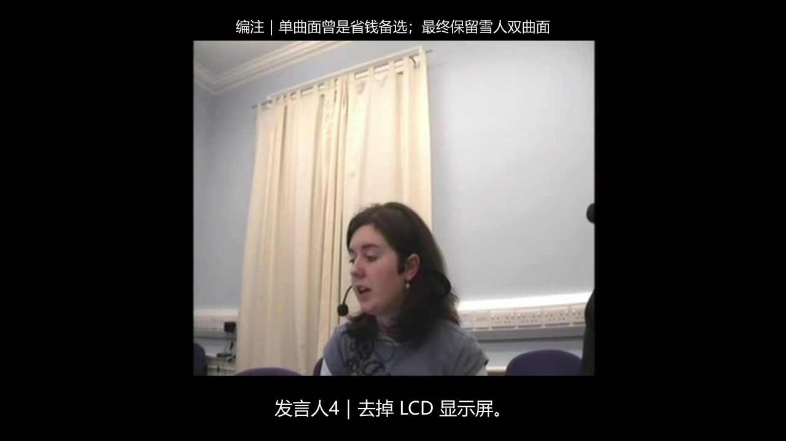
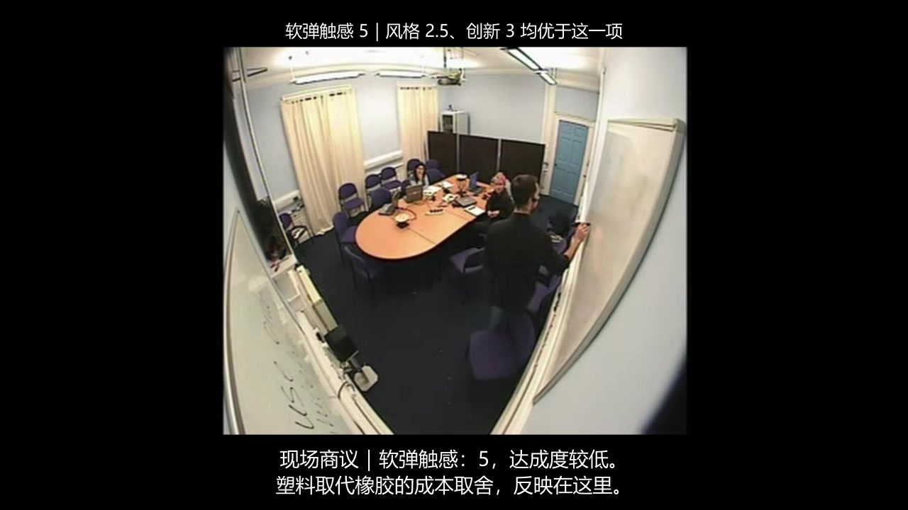
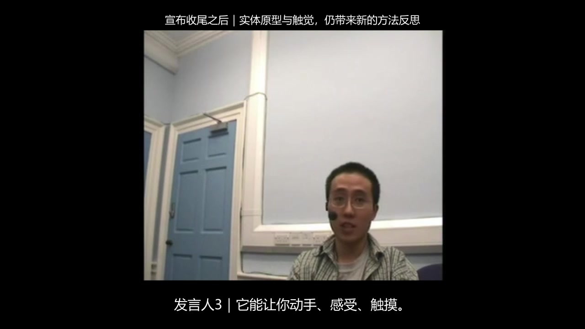
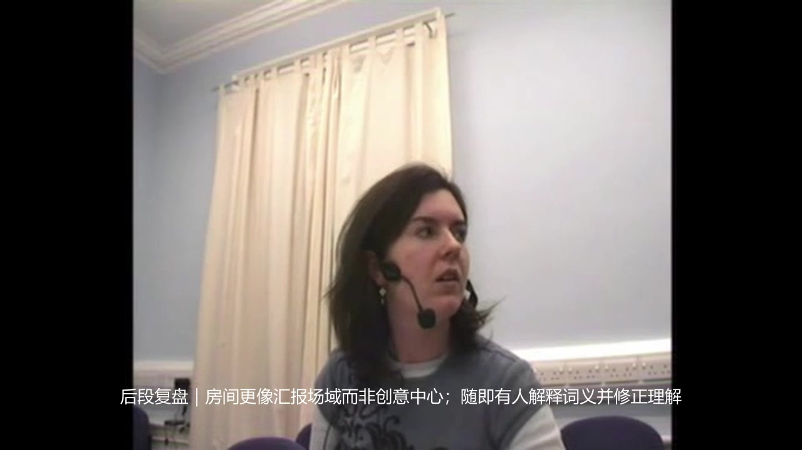
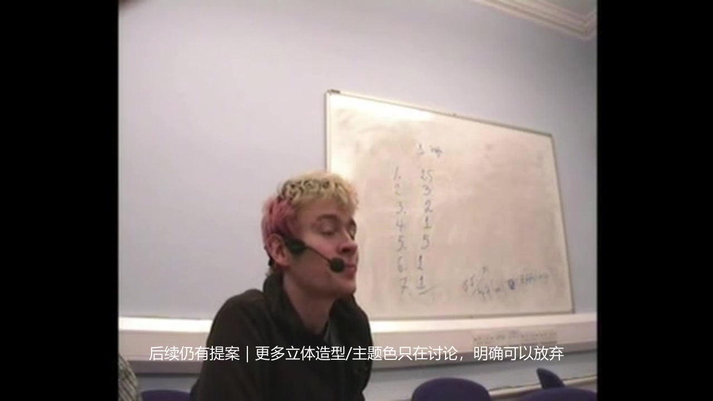
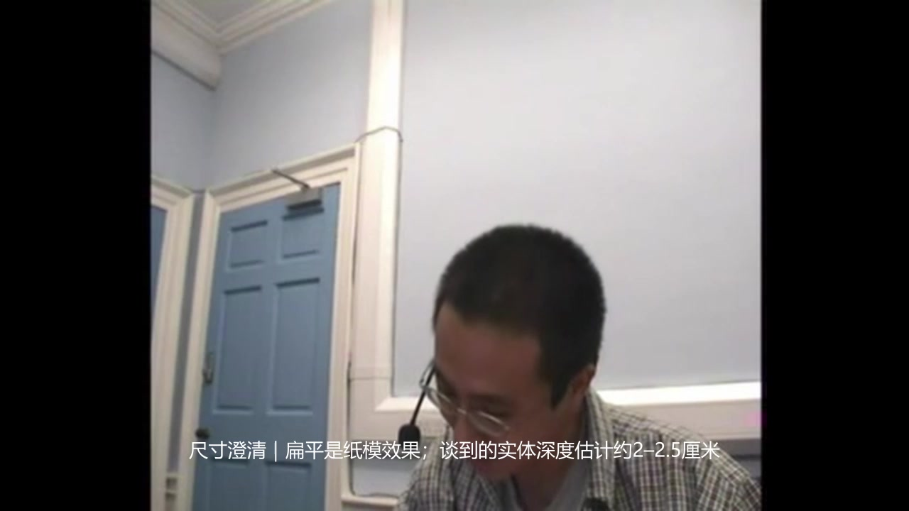
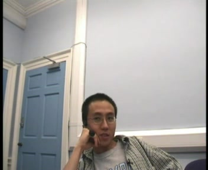
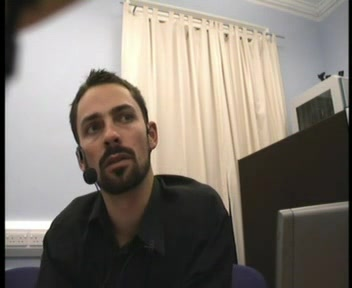

把检索覆盖、身份取证、剪辑与复核行为同最终成片逐个对应。当前为24项v3回溯模块评分；沿用实际工具日志、原生工程、官方源标注与既有观察。原始输出不变，连续人耳听评和独立评委共识尚待完成。
三、17个可核查的问题与裁决
gpt-6-astra核心错署名O02
把材料不足的纠正署给了原型说明者
源：765.4–774.51s
成片：124.88–128.4s

- 实际观察
- 成片127秒显示粉发D近景，字幕为“发言人2｜只是橡皮泥不够，所以模型没做得那么厚。”但官方词标772.42–774.51秒这句出自A；前一段D只是在解释想要较厚、便于手握的设计。
- 证据与评分关系
- 按错误命题归新O02事实纠错：一次明确核心错归属使该模块0/6，损失6分。与布局事件分别归属不同模块，不重复对同一镜头加歧义或时间偏移扣分。
- 判定边界
- 最终ASR未识出这句弱声，不能因此自动认定听觉丢句；此裁决针对明确写出的错误归属。同处错误近景不重复扣歧义分，也不计成音画不同步。
gpt-6-astra核心错署名O01
A的熟悉布局理由被署给主持者B
源：883.33–893.52s
成片：152–157.8s

- 实际观察
- 成片153.8秒为B的近景和“发言人4｜大家已习惯电话式布局。”实际是A连续发言，解释改键形而非改位置的理由；官方词标以及最终ASR都保留了telephone相关原话。
- 证据与评分关系
- 按错误命题归新O01方案/理由：一次明确核心错归属使该模块0/8，损失8分。此事件与材料纠错独立，未再加全局罚款。
- 判定边界
- 正确源时钟与正确署名是两个要求。新C05的部分分针对更早C的新网格提案遗漏，本次错署名只在O01登记。
gpt-6-astra内容限定遗漏C04
保留曲面取舍，却省掉仅约1欧元的比较
源：573.89–589.43s
成片：72–82s

- 实际观察
- 成片说明单曲面是省钱备选，保留雪人双曲面作为结果，但未呈现仅省约1欧元的明确比较。
- 证据与评分关系
- C04需要曲面备选/约1欧元比较、按钮计价估算及配色适用范围；节省额缺失使整个模块只计2.5/5。
- 判定边界
- 不把未采纳备选误判为最终方案；扣分依据是题目指定事实遗漏。
gpt-6-astra方案对比不全C05
呈现熟悉布局的结果，缺少最初的新网格提案
源：845.12–893.52s
成片：147.4–157.8s
- 实际观察
- 保留改键形、保持熟悉位置的结果和理由，却没有让观众看到C此前提出不同button grid的具体提案。
- 证据与评分关系
- C05把厚度与按键布局取舍合并验收：厚度事实完整，布局缺最初新网格提案，整体2/4。相邻熟悉布局理由的错署名单列O01。
- 判定边界
- 不要求每句闲聊入片；需要补的是方案比较的必要一端。
gpt-6-astra争议限定遗漏C07
保留触感评分，缺少全橡胶替代的成本限制
源：1163.2–1191.37s
成片：196.4–212.6s

- 实际观察
- 成片有多用塑料、价格妥协和软弹得分5，但没有1182–1191秒关于全橡胶外壳及成本难承受的进一步讨论。
- 证据与评分关系
- 创新/触感模块C07包含删功能/保滚轮与全橡胶替代的成本限制；后一环节缺失，整体2/4。
- 判定边界
- 评分没有否定已正确保留的得分，也不要求从低清白板读出细节。
gpt-6-astra晚段限定遗漏C13
找到收尾后的反思，仍漏掉更晚的三维尺寸理解
源：2290.32–2357.15s
成片：335.76–351.48s

- 实际观察
- 片尾正确使用正式收尾之后的Play-Doh、创意和触觉反思，原声选段止于2309.88秒；2342秒后实体模型帮助理解三维尺寸的论述没有入片。
- 证据与评分关系
- C13同时需要收尾后触觉/创意与三维尺寸理解；缺后一环节，1/2。完整听取尾部与完整选入成片是两个问题。
- 判定边界
- 模型并非完全没看结尾：第13次工具覆盖晚段，第81次还检查更长视频尾部。覆盖与完整选入应分开判断。
gpt-6-astra剪接自然度待复核O06
少数压缩切点停在短语内部
源：47.4–52s；887.8–893.6s
成片：17.4–22s；152–157.8s
- 实际观察
- 源52秒的through the和893.6秒的telephone kind of等短语被切在未完处。字幕补足主题，但不等于原声句子自然结束。
- 证据与评分关系
- O06沿用原声/混音4/4、无空洞/重复1/1、语句衔接暂定0.5/1，共5.5/6；连续人耳复核尚待完成。
- 判定边界
- 词级边界和PCM导航用于定位，不是听到了爆音、断字或不可懂的证据。真实双轨抢话也不被误计成重复接缝。
同一事件只进入相应主条目。内容事实、人物归属和时间同步分别判定；某类正确不会自动抵消另一类错误。
gpt-6-luna内容遗漏C11 · C12 · C13
没有检索到真正的会议后段
源：1800–2624.16s
成片：遗漏事件或附件，不存在对应成片时间
- 实际问题
- 混合轨ASR只覆盖0–300、600–900、1200–1800秒。领导/控制的实质争议、后段限时例外与收尾后方法反思没有进入成片。成片涉及设备段，但不等于已覆盖后续争议。
- 证据与评分关系
- 后段领导争议、合作/限时与收尾后方法反思均未选入，新C11/C12/C13分别0/5、0/4、0/2，共失11分。检索范围是解释证据，扣分依据仍是最终遗漏。
- 判定边界
- 这是可见检索范围、最终遗漏与终止时预算的对应，不能据此断言模型的内部动机，也不按搜索少本身扣分。
gpt-6-luna全局身份O04
四个代号没有形成一对一人物表
源：1280–1324s；1463–1518s
成片：遗漏事件或附件，不存在对应成片时间
- 实际问题
- speaker_map中的S2与S3实际上都对应C。唯一会议视觉调用只提供7帧Corner；没有观察其在附件中列出的Closeup近景，也没有独立耳麦局部ASR。
- 证据与评分关系
- 四人全局映射子分0/2；白板动态锚点1/1，换座后锚点0/1，合并O04为1/4。附件局部不确定性没有被虚构为明确核心错署名。
- 判定边界
- 不要求实名或职务。对不确定性的诚实说明值得保留，但不能替代交付所需的稳定身份对应。
gpt-6-luna局部归属歧义O01 · O02 · O03
持续近景使听者看起来像发言人
源：600–645s；1460–1496s；1622–1657s
成片：89–134s；269–305s；305–340s

- 实际问题
- 删减/按钮段主要A/B说话却持续展示C；room段C说话却持续展示B；设备段主要A说话却长时间展示B，没有画外音或插画身份提示。
- 证据与评分关系
- 三个歧义事件按命题分别归属O01方案/计价、O02词义误会、O03设备批评，各按半分计为4/8、3/6、3/6；没有升级为明确核心错署名，也未再对换座事件扣分。
- 判定边界
- 短暂听者反应、多人全景或清楚交代的B-roll不属于这类错误；换座事件仅记O03。
gpt-6-luna动态身份O04
跟到白板，却丢失评价后的新座位
源：1202–1247s；1280–1325s
成片：179–224s；224–269s

- 实际问题
- 白板段Corner确实覆盖离座评价者C；后续形态/色系构想仍由C提出，但画面持续Closeup2中的D。
- 证据与评分关系
- 两个动态锚点分别1/1和0/1，与全局映射0/2相加，O04为1/4；同一换座镜头只在此登记。
- 判定边界
- 该事件只记O04动态连续性；同期源时钟正确不证明人物正确，也不在O01/O02/O03或O07重复扣分。
gpt-6-luna跨模态语义C06 · C07
有真实白板，解释仍把量表和汇总读错
源：1060–1176s；1202–1247s
成片：179–224s

- 实际问题
- 成片写“0最高、9最低”和风格约2、创新约7、软弹约8；官方单项量表是1好、7差，对应单项结果约2.5、3、5。所选后段原声在做累计汇总。
- 证据与评分关系
- 量表/风格模块C06为0/4，创新/触感模块C07为0/4；均含实质错误。真实白板画面不补足错误数值或方向。
- 判定边界
- 不要求读出低清板书。纠错过程可用清晰原声核实，编辑图卡须明确区别于真实板书。
gpt-6-luna实物与因果C05 · O05
原型材料解释错误，也截掉关键厚度手势
源：755–814.8s
成片：134–179s

- 实际问题
- 中文说明把扁平原型解释为纸模效果；原声实际谈Play-Doh材料不足。该镜头在源800秒结束，而相关厚度示意在800.8秒之后。
- 证据与评分关系
- 材料/因果错误使C05为0/4；O05另验收独立的实物/手势要求：真实原型状态1/1，厚度手势0/1，共1/2。
- 判定边界
- 语义错误和视觉锚点缺失分别对应不同要求，不再额外添加总分罚款。
gpt-6-luna音频信号O07 · O06
多次重导改善电平，最终仍未达到两项声音阈值
源：见逐项评分 / 全片或附件
成片：0–355s
- 实际问题
- 首导出−42.89 LUFS；提高增益后到−21.00，最终MP4/WAV约−21.99 LUFS、+0.03 dBTP。要求是−18±2 LUFS且真峰值≤−1 dBTP。另有数处从短语中间切入。
- 证据与评分关系
- O07中响度0/0.5、峰值0/0.5，但新增源时钟差0帧仍得2/2，合计2/3。O06原声/混音4/4、无空洞1/1、衔接0/1，共5/6；听感部分暂定。
- 判定边界
- 超峰值阈值并不直接证明听到了削波；词级切点仅作导航，爆音、断字和自然度仍需连续试听。
gpt-6.1-sol明确错署名O01
核心删减建议被署给另一个人
源：582.76–594.16s
成片：57.48–68.88s


同一源时刻588秒 · A / Closeup3 / Headset0
官方逐词标注中的建议发言者。
同一源时刻588秒 · C / Closeup1 / Headset2
成片所用人物，其标签是S1。这两张图来自真实同步源视频；静态嘴型本身不证明发言归属。判断同时依据官方说话者标注、原声及其全局身份表。查看A的实际标注词句 · 原帧来源和哈希
- 实际问题
- A（Headset0、Closeup3）提出删LCD和高级芯片，由电视反馈替代；成片却采用C近景并署S1。Sol自己的speaker_map中S1=C，正确标签应是S3=A。
- 证据与评分关系
- 本次核心方案错署名归新O01，按明确核心错误规则记0/8。全局映射/动态连续性O04仍4/4；内容模块C02的配置事实仍完整。同一事件没有额外总分罚款。
- 判定边界
- 不是把人物错误算作音画延迟。后验成片抽帧包含51.5与74秒等点，并未抽到57.48–68.88的错误核心区间；不能把抽帧多当作全片逐段核验。
gpt-6.1-sol内容细节C04 · C07 · C10 · C12
主线完整，但仍压掉四处必要限定
源：见逐项评分 / 全片或附件
成片：54–57.48s；181.68–191.68s；229.52–248.2s；294.28–318.08s
- 实际问题
- 保留单曲面备选但遗漏约1欧元节省额；保留软弹得分但缺全橡胶成本限定；设备段遗漏眼镜和时间限制细节；会外协作段缺沟通工具不支持协作。
- 证据与评分关系
- 四个必要环节遗漏使新C04、C07、C10、C12分别2.5/5、2/4、1.5/3、2/4；内容共失8分，得42/50。模块完整性采用0/半分/满分，非旧分数平均。
- 判定边界
- 不是将一般措辞差异计为失败；扣分只沿用原题指定的四个必要事实。
三模型字幕与空间协调O08
字幕清晰度与配文、画面的空间关系不达标
源：见逐项评分 / 全片或附件
成片：遗漏事件或附件，不存在对应成片时间
- 实际问题
- 三份交付均存在字幕不够清晰、字幕或配文与画面重叠的问题，影响持续阅读与整体观感。
- 证据与评分关系
- O08的排字/阅读时间与对比/遮挡/空间关系两个子分，各为0/2；视觉层级仍单独评分：Luna0.5/1、Sol1/1、Astra1/1。因此O08分别为0.5/5、1/5、1/5。
- 判定边界
- 按最终观感评价；不以字幕可编辑、画面与声音同步或样式统一替代可读性。两个字幕子分与视觉层级分别计分，同一问题不在其他项目重复扣分。